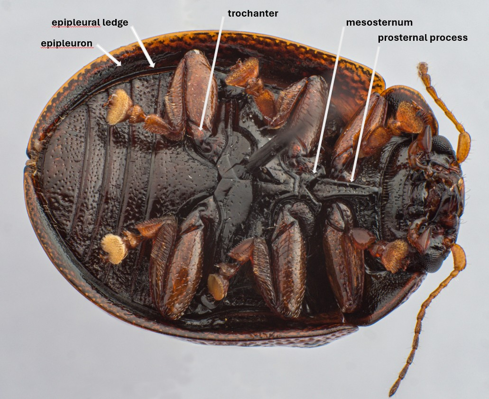

The Venter
The venter contains several characters useful in the identification of Trachymela species. Some of these are identified in Figure 1.
(1) The structure of the prosternum
(2) The extent of setation on the prosternum and metasternum
(3) Presence of setae on the trochanters
(4) Width of the epipleural ledges
(5) Colour (of epipleurae, ventral surface generally, legs.

Figure 1: The venter of Ta188, indicating some useful taxonomic features.
Back to User Guide
 TrachymelaID
TrachymelaID